Memory refers to the physical devices used to store programs (sequences of instructions) or data on a temporary or permanent basis for use in a computer or other digital electronic device.
Types of Memory
1)Primary storage, also known as main storage or memory, is the main working area in a computer in which data is stored for quick access by the computer's processor.
2)Secondary storage, sometimes called auxiliary storage, is all data storage that is not currently in a computer's primary storage or memory. The computer usually uses its input/output channels to access secondary storage and transfers the desired data using intermediate area in primary storage. Secondary storage does not lose the data when the device is powered down-it is non-volatile.
DIFFERENCE BETWEEN PRIMARY AND SECONDARY MEMORY
(a)Unlike primary memory, secondary memory is not directly accessed by the CPU.
(b)Primary memory is volatile in nature, while secondary memory is non volatile. The information that is stored in the primary memory cannot be retained when the power is turned off.
(c)The primary memory is much faster in terms of data access time than the secondary memory.
(d)Primary memory is more expensive than the secondary memory devices.
(e)The primary memory contains program and data that is currently being used by the CPU (temporary) while secondary memory is used for bulk storage of data permanently.
(f)Primary memory is much smaller than secondary memory.
1. PRIMARY STORAGE
a)RAM (Random Access Memory) /RWM (Read Write Memory) - Also referred to as main memory or primary storage. Its contents can be read and can be changed and is the working area for the user. It is used to hold portions of the operating system, programs and data during processing. RAM chips are volatile, that is, they lose their contents during a power cycle. A power cycle is when a device is purposely or accidently powered off and then powered back on.
Typical sizes of RAM include 32 MB, 64 MB, 128 MB, 256 MB, 512 MB, 1 GB, 2 GB, 4 GB, 8 GB etc.
There are several types of RAM:
-DRAM - Dynamic RAM
With Dynamic RAM the memory must be constantly refreshed (reenergized) or it will lose its contents.
-EDO RAM -Extended Data Out Random Access Memory
Unlike conventional DRAM which can only access one block of data at a time, EDO RAM can start fetching the next block of memory at the same time that it sends the previous block to the CPU.
-SRAM - Static RAM
Static RAM is faster and less volatile than dynamic RAM, but it requires more power and is more expensive
-SDRAM - Synchronous DRAM
This is a type of DRAM that can run at much higher clock speeds than conventional memory. SDRAM actually synchronizes itself with the CPU's bus and is capable of running at 133 MHz about twice as fast EDO RAM. DDR (Double Data Rate), DDR2 and DDR3 are examples of SDRAM.
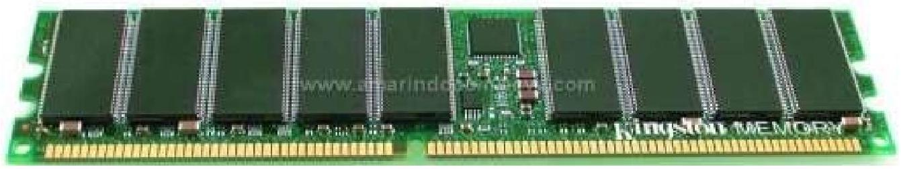
Various types of RAM
b)Cache Memory - Cache memory is high-speed memory that a processor can access more quickly than RAM and more expensive than RAM. Frequently used instructions are stored in cache since they can be retrieved more quickly, improving the overall performance of the computer. Most CPUs have an internal cache memory (in-built in the processor) which is referred to as Level 1 (L1) cache. This can be supplemented by external cache memory fitted on the motherboard and referred to as Level-2 cache memory or secondary cache.
c)ROM (Read Only Memory) - Its contents can only be read and cannot be changed. ROM chips are nonvolatile, so the contents aren't lost if the power is disrupted. ROM provides permanent storage for unchanging data & instructions, such as data from the computer maker. It is used to hold instructions for starting the computer called the bootstrap program.
ROM chips, the contents, or combination of electrical circuit states, are set by the manufacturer and cannot be changed. States are permanently manufactured into the chip.
Programmable ROM (PROM): This is a type of ROM that can be programmed using special equipment; it can be written to, but only once. Used mostly in electronic devices such as alarm systems.
Erasable Programmable ROM (EPROM): An EPROM is a ROM that can be erased and reprogrammed. A little glass window is installed on top of the ROM package, through which you can actually see the chip that holds the memory. Ultraviolet light of a specific frequency can be shined through this window for a specified period of time, which will erase the EPROM and allow it to be reprogrammed again. These chips are usually easily identified by their small, circular windows.
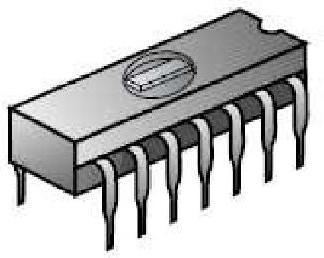
EPROM Chip
Electrically Erasable Programmable ROM (EEPROM): The next level of erasability is the EEPROM, which can be erased under software control. This is the most flexible type of ROM, and is now commonly used for holding BIOS programs. When you hear reference to a "flash BIOS" or doing a BIOS upgrade by "flashing", this refers to reprogramming the BIOS EEPROM with a special software program. This is not a contradiction of what "read-only" really means, but the rewriting is done maybe once a year or so, compared to real read-write memory (RAM) where rewriting is done often many times per second. Flash memory was derived from EEPROM.
It is very inconvenient to remove an IC every time it needs to have the software it contains upgraded. EEPROM chips can be erased by sending a special sequence of electric signals to the chip while it is still in the circuit. These signals then erase all or part of the chip.
NB/For the most part, PCs today use memory chips arranged on a small circuit board. These circuit boards are called Single Inline Memory Modules (SIMMs) or Dual Inline Memory Modules (DIMMs), depending on if there are chips on on..... e side of the circuit board or on both sides, respectively.
d)Non-Volatile CMOS (CMOS RAM) It was traditionally called CMOS RAM because it used a small, low-power Complementary Metal-Oxide-Semiconductor (CMOS) battery when system power is off. The battery also keeps the Real-Time Clock (RTC) going. The CMOS RAM and the real-time clock have been integrated as a part of the Southbridge chipset and it may not be a standalone chip on modern motherboards. The CMOS is used to store basic information about the PC's configuration: number of hard drives, how much memory etc. Boot order settings, date and CMOS password are also stored in the CMOS memory.
e)Non-Volatile BIOS Memory
This is a block of Read Only Memory (ROM) which is separate from the main system memory used for loading and running software. The Rom contains the PC's Basic Input/Output system (BIOS)
The BIOS performs the following routines and functions:
1.When the machine is powered on, it inspects the computer to determine what hardware is fitted and then conducts some simple tasks to see if everything is functioning normally - process known as the Power-On Self Test (POST).
2.If any of the peripherals are plug-and-play devices, the BIOS recognizes them and assigns them resources.
3.Allows the PC's set-up configuration to be viewed and edited.
If all the tests are passed, the ROM boots the machine. This, it does by looking at the boot sector of either a hard disk or any other drive to find the boot loader program of the operating system. When it does find the file, it loads the file into RAM, and then the operating system takes charge of the computer.
1. SECONDARY STORAGE
CLASSIFICATION OF SECONDARY STORAGE
a)Internal Storage Media
Internal storage allows the data and applications to be loaded very rapidly into memory, ready for use. The data can be accessed much faster than data which is stored on an external storage device. This is because internal storage devices are connected directly to the motherboard and its data bus whereas external devices are connected through a hardware interface such as USB, which means they are considerably slower to access.
Internal storage also means that if the computer is moved around, it will still retain its most frequently used data. The main disadvantage of internal storage is that when the hard disk fails, all the data and applications may be lost. This can be avoided to some extent by using more than one hard disk within the machine. Each hard disk has a copy of all the data, so if one fails the other can carry on. This is called a RAID array. An alternative is to use external media for backup. An example of internal storage media is an internal/fixed hard disk.
b)External Storage Media
These media are normally used for data back-ups and are not permanently fixed inside a computer. To fulfill the large storage requirements of computers, magnetic disks such as diskettes and external hard disks, optical disks such as CDs and DVDs and flash drives are generally used. Advantages of external storage include:
-Data can be transported easily from one place to another- portable.
-It is useful to store software and data that is not needed frequently.
-External storage also acts as data back-up.
-External storage provides additional storage other than available in the computer.
Magnetic Storage Media
How Magnetic Storage Works
•A magnetic disk's medium contains iron oxide particles, which can be polarized-given a magnetic charge-in one of two directions.
•Each particle's direction represents a 1 (on) or 0 (off), representing each bit of data that the CPU can recognize.
•A disk drive uses read/write heads containing electromagnets to create magnetic charges on the medium. An electromagnet is a type of magnet in which the magnetic field is produced by electric current.
The primary types of magnetic storage Media are:
-Diskettes (floppy disks)
-Hard disks
-High-capacity floppy disks
-Disk cartridges
-Magnetic tape
1. Diskettes/Floppy disks
-Diskette drives, also known as floppy disk drives, read and write to diskettes (called floppy disks or floppies).
-Diskettes are used to transfer files between computers, as a means for distributing software, and as a backup medium.
-Diskettes come in two sizes. 5.25-inch and 3.5-inch.
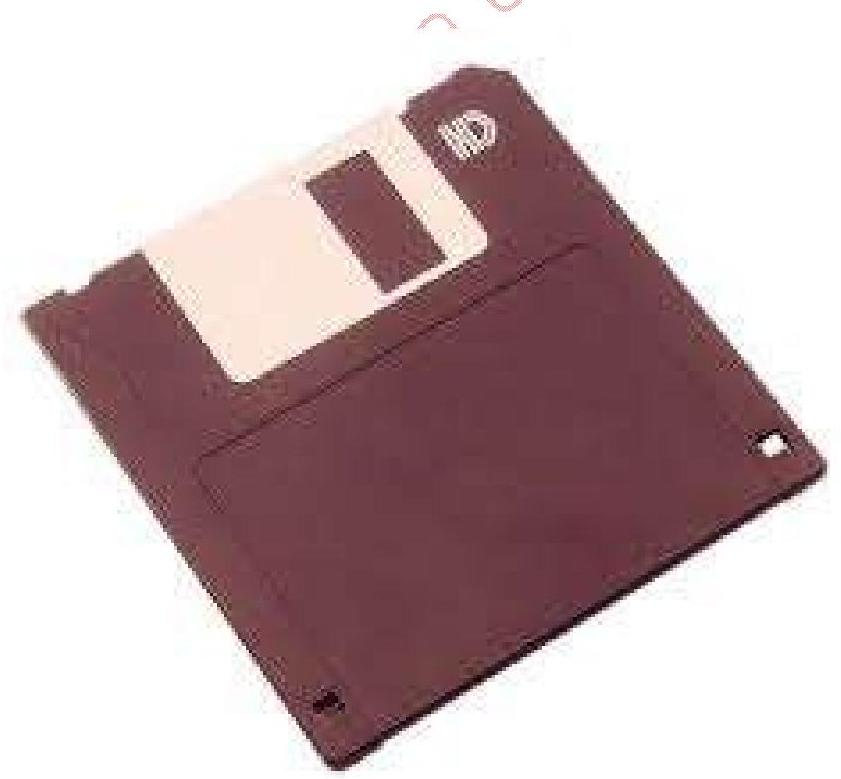
Floppy Disks
2. Hard Disks
-Hard disks use multiple platters, stacked on a spindle. Each platter has two read/write heads, one for each side.
-Hard disks use higher-quality media and a faster rotational speed than diskettes.
-Removable hard disks combine high capacity with the convenience of diskettes.
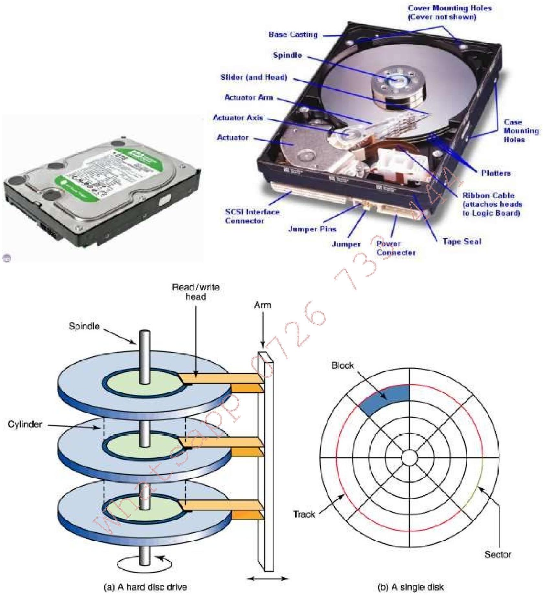
Hard Disk Drive
2. Disk cartridges are like small removable hard disks, and can store up to 2 GB .
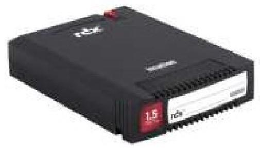
Disk cartridge
3. Magnetic tapes offer very slow data access, but provide large capacities and at low cost. They are vulnerable to dust and interference from magnetic fields.
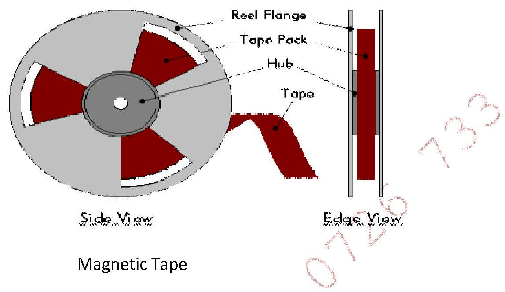
Magnetic Tape
Advantages of Magnetic Devices
•They are very cheap for example floppy disks.
•They offer very fast data access speeds, about 1000 kb/s
•Data can be read directly from any part of the hard disk
•Most of the devices store yery large amounts of data e.g. hard disks.
Disadvantages of Magnetic Devices
•Data can be altered or erased by magnetic fields, dust or mechanical problems
•They gradually lose their charge over time and therefore lose data
•Hard disks eventually fail (can no longer be magnetized) which stops the computer from working
•Regular clashes can damage the surface of the disk, leading to loss of data.
b) Optical Storage Devices
-An optical disk is a high-capacity storage medium. An optical drive uses reflected light to read data.
-To store data, the disk's metal surface is covered with tiny dents (pits) and flat spots (lands), which cause light to be reflected differently.
-When an optical drive shines light into a pit, the light cannot be reflected back. This represents a bit value of 0 (off). A land reflects light back to its source, representing a bit value of 1 (on). Laser technology is used to record and read information from a CD's or a DVD's surface.
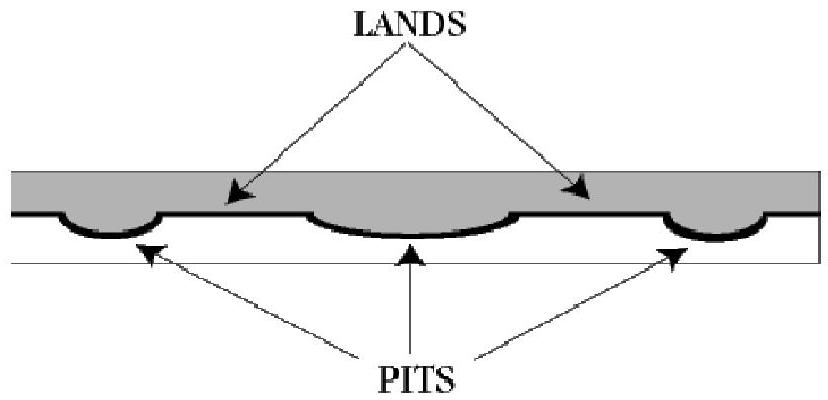
Optical Disk Surface
Types of Optical Storage Devices
1. CD-ROM
-In PCs, the most commonly used optical storage technology is called Compact Disk Read-Only Memory (CD-ROM). CDs use microscopic indentations (Pits) and flat surfaces (Lands) to store information.
-A standard CD-ROM disk can store up to 650-700 MB of data, or about 70 minutes of audio.
-Once data is written to a standard CD-ROM disk, the data cannot be altered or overwritten.
CD-R (Compact Disk - Recordable)
A CD-R disk is blank when it is supplied. The user can write data to it just once. After data has been written to the disk it cannot be changed. CD-Rs are often used for making permanent backups of data and distributing software when only a small number of copies are required.
CD-RW (Compact Disk - Rewriteable)
CD-RW disks can be read from and written to many times
CD-ROM Speeds and Uses
-Early CD-ROM drives were called single speed, and read data at a rate of 150 KBps . (Hard disks transfer data at rates of 5-15 MBps ).
-CD-ROM drives now can transfer data at speeds of up to 7800 KBps . Data transfer speeds are getting faster.
-CD-ROM is typically used to store software programs. CDs can store audio and video data, as well as text and program instructions.
2. DVD-ROM
-A variation of CD-ROM is called Digital Video Disk Read-Only Memory (DVD-ROM), and is being used in place of CD-ROM in many newer PCs. Its speed is much faster than CD and has a much higher storage capacity. This is made possible by the reduction of the distance between the pits.
-Standard DVD disks storage capacity is 4.7 GB of data-enough to store an entire movie. Dual-layer DVD disks can store up to 17 GB .
-Dual-layer DVD disks can store so much data because both sides of the disk are used, along with sophisticated data compression technologies.
DVD-RW
These disks can be read from and written onto many times.
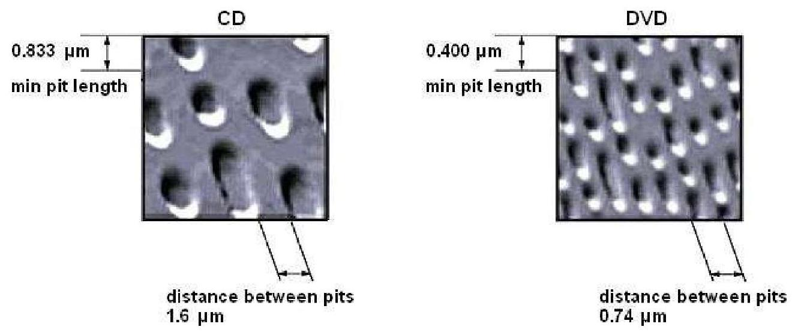
Difference between DVD and CD
3. Blu-Ray Disc
Blu-ray Disc (BD) is a digital optical disc data storage format designed to supersede the DVD format. The plastic disc is 120 mm in diameter and 1.2 mm thick, the same size as DVDs and CDs. Conventional (pre-BD-XL) Blu-ray Discs contain 25 GB per layer, with dual layer discs ( 50 GB ) being the industry standard for feature-length video discs. Triple layer discs ( 100 GB ) and quadruple layers ( 128 GB ) are available for BDXL re-writer drives. The name Blu-ray Disc refers to the blue laser used to read the disc, which allows information to be stored at a greater density than is possible with the longer-wavelength red laser used for DVDs. The major application of Blu-ray Discs is as a medium for video material such as feature films.
The Blu-ray disc overcomes DVD-reading issues by placing the data on top of a 1.1-mm-thick polycarbonate layer. Having the data on top prevents birefringence and therefore prevents readability problems. And, with the recording layer sitting closer to the objective lens of the reading mechanism, the problem of disc tilt is virtually eliminated. Because the data is closer to the surface, a hard coating is placed on the outside of the disc to protect it from scratches and fingerprints.
Advantages of Using Optical Devices over Magnetic Disks
•In magnetic devices, data can be altered or erased by magnetic fields, dust or mechanical problems unlike in optical devices where data cannot be affected by dust, magnetic fields or fingerprints.
•Magnetic devices gradually lose their charge over time and therefore lose data whereas data written on optical devices is usually permanent.
•Hard disks, which are magnetic, eventually fail which stops the computer from working.
•Regular clashes of magnetic devices can damage the surface of the disk, leading to loss of data.
•Optical disks are more durable and last a long time. There is a greater distance between the media and the Read/Write element in a CD as compared to magnetic storage and therefore optical devices can be used repeatedly without wear or data damage.
•Optical devices are more portable in that they are small and lightweight.
•They are inexpensive i.e. they are cheaper to manufacture than magnetic devices.
Flash/Electronic Memory
Flash memory and pen drives are very common today. Flash memory is also known as a solid state storage device because there are no moving parts and therefore less susceptible to mechanical damage. They are also small in physical size and light in weight therefore portable. Flash memory also transfers data at a faster rate than optical and magnetic media. They are useful in devices where frequent updating of data is required. Flash memory is usually found in digital cameras, digital camcorders and mobile phones.
Examples of flash memory include:
-Memory sticks/flash disks
-Secure digital (SD Cards)
-MultiMedia card (MMC)
-Smart cards
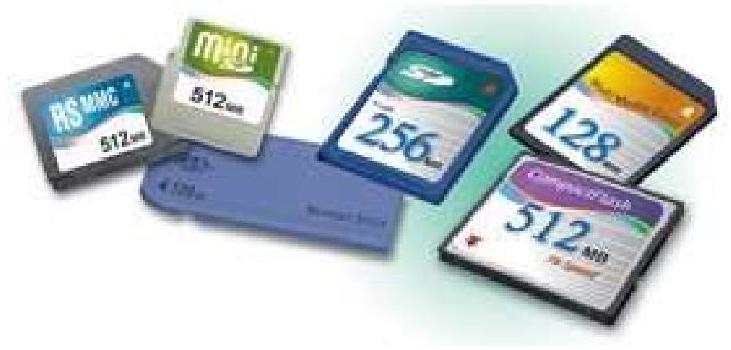
Flash Memory Examples
Other Backup Options
-Zip drive/disk - It is a special diskettes that hold 100 MB, 250 MB or 750 MB
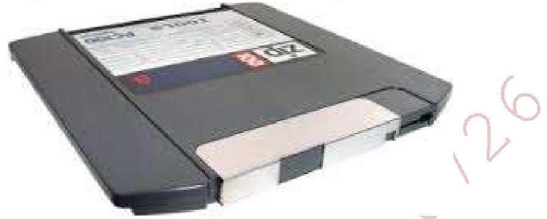
Zip Drive and Disk
-SyQuest drive - Uses special cartridges that hold 200 MB
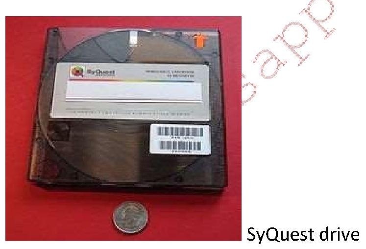
SyQuest Drive and Cartridge
-RAID - RAID stands for Redundant Array of Independent or Inexpensive Disks. RAID technology is fault tolerant; that is, it allows data to be stored so that no data or transactions are lost in the event of disk failure. RAID involves using multiple hard disks in a special controller unit and storing data across all the disks in conjunction with extra reconstruction information that allows data to be recovered if a hard disk fails.
-Storage Area Network (SAN) - A storage area network connects servers and storage devices in a network to store large volumes of data. Data stored in a storage area network can be quickly retrieved and backed up. The use of storage area networks is likely to increase in the near future. The storage devices are accessible to servers so that the devices appear like they are locally attached to the operating system.
-Cloud Storage
This refers to saving data to an off-site storage system maintained by a third party i.e. the hosting company. People and organizations buy or lease storage capacity from the providers to store user, organizational or application data.
-Computer Output Microfilm/Microfiche (COM) - A microfilm is a film on which printed materials are photographed and stored at greatly reduced size for ease of storage. Companies that must store significant numbers of paper documents often use computer output microfilm. These devices transfer data directly from the computer onto the microfilm, thus eliminating the intermediate step of printing the document on paper. Newspapers and journals typically archive old issues in this manner, although some are now using optical storage devices. Data written on a microfilm is read using a microfilm reader.
Storage Capacity Abbreviations
-KB - kilobyte - 1000 (thousand bytes)
-MB - megabyte - 1,000,000 (million bytes)
-GB - gigabyte - 1,000,000,000 (billion)
-TB - terabyte - 1,000,000,000,000 (trillion)
Storage Units
Difference between storage media and storage devices
A storage medium (media is the plural) is the physical material on which data items are kept. A storage device is the computer hardware that records and retrieves items to and from a storage medium. Storage devices can function as sources of input and output. When storage devices transfer items from a storage medium into memory - a process called reading - they function as sources of input. When storage devices transfer items from memory to a storage medium - a process called writing - they function as sources of output. Sometimes the storage medium is removable from the device, e.g. a CD-ROM can be taken out of a CD drive. Types of storage media include floppy disks, hard disks, compact discs, tape, PC Cards, microfilm, and microfiche.
The Memory Hierarchy
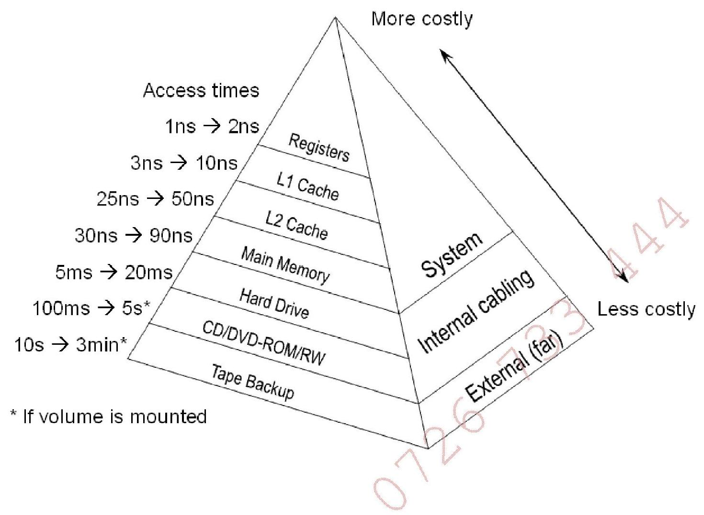
The Memory Hierarchy
📡5. COMMUNICATION DEVICES
A communication device is a piece of equipment or hardware designed to help computers or electronic devices communicate with each other.
In computer networking, a NIC provides the hardware interface between a computer and a network. Network cards act as the physical connection between the computer and the network media. Every NIC has a unique Media Access Control (MAC) address and because an NIC's MAC address is permanent, it's often referred to as the "real," or physical, address of a computer. NICs are built into the motherboard of most new computers integrated into the motherboard chipset or implemented via a low-cost dedicated Ethernet chip.
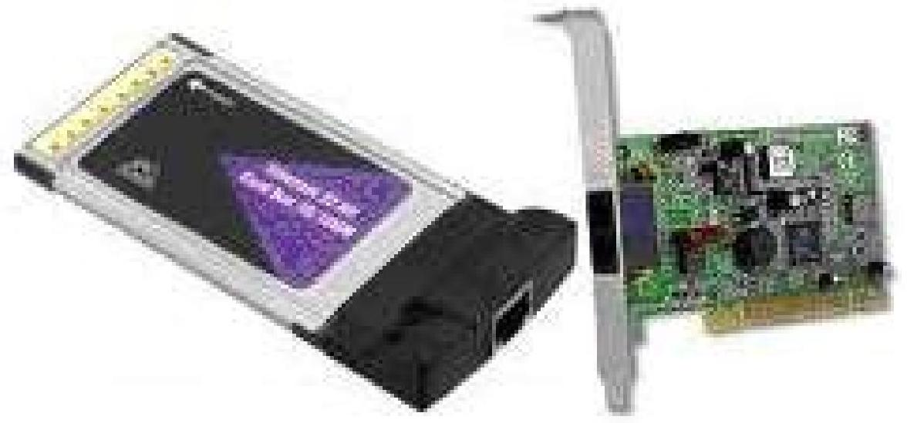
Network Interface Card
- Modem
Modems allow computers (digital devices) to communicate via the phone system (based on analog technology). It turns the computers digital data into analog, sends it over the phone line, and then another modem at the other end of the line turns the analog signal back into digital data.
- Fax modem
A fax modem enables a computer to transmit and receive documents as faxes. Basic digital/analog modem enhanced with fax transmission hardware that enables faxing of information from computer to another fax/modem or a fax machine.